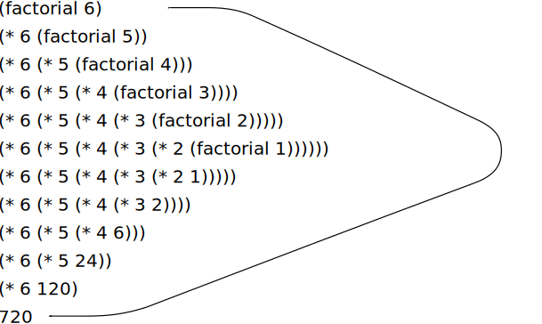

We begin by considering the
factorial function, defined by
\[
\begin{array}{lll}
n! &=& n\cdot(n-1)\cdot(n-2)\cdots3\cdot2\cdot1
\end{array}
\]
There are many ways to compute factorials. One way is to make use of
the observation that $n!$ is equal to
$n$ times $(n-1)!$ for
any positive integer $n$:
\[
\begin{array}{lll}
n! &=& n\cdot\left[(n-1)\cdot(n-2)\cdots3\cdot2\cdot1\right] \quad = \quad n \cdot(n-1)!
\end{array}
\]
Thus, we can compute $n!$ by computing
$(n-1)!$ and multiplying the
result by $n$. If we add the stipulation that 1!
is equal to 1,
this observation translates directly into a
procedure:computer function:
Original
JavaScript
(define (factorial n)
(if (= n 1)
1
(* n (factorial (- n 1)))))
function factorial(n) {
return n === 1
? 1
: n * factorial(n - 1);
}
Original
JavaScript
We can use the substitution model of
section 1.1.5 to watch this
procedure in action computing 6!, as shown in
figure 1.5.

Figure 1.5 A linear recursive process for computing 6!.
We can use the substitution model of
section 1.1.5 to watch this
function in action computing 6!, as shown in
figure 1.6.
Figure 1.6 A linear recursive process for computing 6!.
Now let's take a different perspective on computing factorials. We
could describe a rule for computing $n!$ by
specifying that we first multiply 1 by 2, then multiply the result by 3,
then by 4, and so on until we reach $n$.
More formally, we maintain a running product, together with a counter
that counts from 1 up to $n$. We can describe
the computation by saying that the counter and the product simultaneously
change from one step to the next according to the rule
\[
\begin{array}{lll}
\textrm{product} & \leftarrow & \textrm{counter} \cdot \textrm{product}\\
\textrm{counter} & \leftarrow & \textrm{counter} + 1
\end{array}
\]
and stipulating that $n!$ is the value of the
product when the counter exceeds $n$.
Once again, we can recast our description as a
procedurefunction
for computing
factorials:[1]
Compare the two processes. From one point of view, they seem hardly
different at all. Both compute the same mathematical function on the
same domain, and each requires a number of steps proportional to
$n$
to compute $n!$. Indeed, both processes even
carry out the same sequence of multiplications, obtaining the same sequence
of partial products. On the other hand, when we consider the
shapes of the two processes, we find that they evolve quite
differently.
Consider the first process. The substitution model reveals a shape of
expansion followed by contraction, indicated by the arrow in
figure 1.6.
The expansion occurs as the process builds up a chain of
deferred operations (in this case, a chain of multiplications).
The contraction occurs as the operations are actually performed. This
type of process, characterized by a chain of deferred operations, is called a
recursive process. Carrying out this process requires that the
interpreter keep track of the operations to be performed later on. In the
computation of $n!$, the length of the chain of
deferred multiplications, and hence the amount of information needed to
keep track of it,
grows linearly with $n$ (is proportional to
$n$), just like the number of steps.
Such a process is called a
linear recursive process.
By contrast, the second process does not grow and shrink. At each
step, all we need to keep track of, for any $n$,
are the current values of the
variablesnamesproduct, counter,
and
max-count.max_count.
We call this an
iterative process. In general, an iterative process is one whose
state can be summarized by a fixed number of
state variables, together with a fixed rule that describes how
the state variables should be updated as the process moves from state to
state and an (optional) end test that specifies conditions under which the
process should terminate. In computing $n!$, the
number of steps required grows linearly with $n$.
Such a process is called a
linear iterative process.
The contrast between the two processes can be seen in another way.
In the iterative case, the state variables provide a complete description of
the state of the process at any point. If we stopped the computation between
steps, all we would need to do to resume the computation is to supply the
interpreter with the values of the three state variables. Not so with the
recursive process. In this case there is some additional
hidden information, maintained by the interpreter and not
contained in the state variables, which indicates where the process
is in negotiating the chain of deferred operations. The longer the
chain, the more information must be maintained.[2]
In contrasting iteration and recursion, we must be careful not to
confuse the notion of a
recursive process with the notion of a recursive
procedure.
function.
When we describe a
procedurefunction
as recursive, we are referring to the syntactic fact that the
procedure definitionfunction declaration
refers (either directly or indirectly) to the
procedurefunction
itself. But when we describe a process as following a pattern that is, say,
linearly recursive, we are speaking about how the process evolves, not
about the syntax of how a
procedurefunction
is written. It may seem disturbing that we refer to a recursive
procedurefunction
such as
fact-iterfact_iter
as generating an iterative process. However, the process really is
iterative: Its state is captured completely by its three state variables,
and an interpreter need keep track of only three
variablesnames
in order to execute the process.
One reason that the distinction between process and
procedurefunction
may be confusing is that most implementations of common languages
(including
Ada, Pascal, and C)
(including
C,
Java, and
Python)
are designed in such a way that the interpretation of
any recursive
procedurefunction
consumes an amount of memory that grows with the number of
procedurefunction
calls, even when the process described is, in principle, iterative.
As a consequence, these languages can describe iterative processes only
by resorting to special-purpose
looping constructs such as
$\texttt{do}$,
$\texttt{repeat}$,
$\texttt{until}$,
$\texttt{for}$, and
$\texttt{while}$.
The implementation of
SchemeJavaScript
we shall consider in chapter 5 does not share this defect. It will
execute an iterative process in constant space, even if the iterative
process is described by a recursive
procedure.function.
Original
JavaScript
An implementation with this property is called
tail-recursive. With a tail-recursive implementation,
iteration can be expressed using the ordinary procedure
call mechanism, so that special iteration constructs are useful only as
syntactic sugar.[3]
An implementation with this property is called
tail-recursive.[4]
With a tail-recursive implementation,
iteration can be expressed using the ordinary function
call mechanism, so that special iteration constructs are useful only as
syntactic sugar.[5]
Exercise 1.9
Each of the following two
proceduresfunctions
defines a method for adding two positive integers in terms of the
proceduresfunctionsinc, which increments its argument by 1,
and dec, which decrements its argument by 1.
Original
JavaScript
(define (+ a b)
(if (= a 0)
b
(inc (+ (dec a) b))))
function plus(a, b) {
return a === 0 ? b : inc(plus(dec(a), b));
}
Original
JavaScript
(define (+ a b)
(if (= a 0)
b
(+ (dec a) (inc b))))
function plus(a, b) {
return a === 0 ? b : plus(dec(a), inc(b));
}
Using the substitution model, illustrate the process generated by each
procedurefunction
in evaluating
(+ 4 5).plus(4, 5);.
Are these processes iterative or recursive?
Original
JavaScript
The process generated by the first function is recursive.
plus(4, 5)
4 === 0 ? 5 : inc(plus(dec(4), 5))
inc(plus(dec(4), 5))
...
inc(plus(3, 5))
...
inc(inc(plus(2, 5)))
...
inc(inc(inc(plus(1, 5))))
...
inc(inc(inc(inc(plus(0, 5)))))
inc(inc(inc(inc( 0 === 0 ? 5 : inc(plus(dec(0), 5))))))
inc(inc(inc(inc( 5 ))))
inc(inc(inc( 6 )))
inc(inc( 7 ))
inc( 8 )
9
The process generated by the second function is iterative.
plus(4, 5)
4 === 0 ? 5 : plus(dec(4), inc(5))
plus(dec(4), inc(5))
...
plus(3, 6)
...
plus(2, 7)
...
plus(1, 8)
...
plus(0, 9)
0 === 0 ? 9 : plus(dec(0), inc(9))
9
Exercise 1.10
The following
procedurefunction
computes a mathematical function called
Ackermann's function.
Original
JavaScript
(define (A x y)
(cond ((= y 0) 0)
((= x 0) (* 2 y))
((= y 1) 2)
(else (A (- x 1)
(A x (- y 1))))))
function A(x, y) {
return y === 0
? 0
: x === 0
? 2 * y
: y === 1
? 2
: A(x - 1, A(x, y - 1));
}
What are the values of the following
expressions?
statements?
Original
JavaScript
(A 1 10)
A(1, 10);
Original
JavaScript
(A 2 4)
A(2, 4);
Original
JavaScript
(A 3 3)
A(3, 3);
Consider the following
procedures,functions,
where A is the
procedure definedfunction declared
above:
Original
JavaScript
(define (f n) (A 0 n))
(define (g n) (A 1 n))
(define (h n) (A 2 n))
(define (k n) (* 5 n n))
function f(n) {
return A(0, n);
}
function g(n) {
return A(1, n);
}
function h(n) {
return A(2, n);
}
function k(n) {
return 5 * n * n;
}
Give concise mathematical definitions for the functions computed by
the
proceduresfunctionsf, g, and
h for positive integer values of
$n$. For example,
$k(n)$ computes
$5n^2$.
The function $f(n)$ computes
$2 n$,
the function $g(n)$ computes
$2^n$, and
the function $h(n)$ computes
$2^{2^{\cdot^{\cdot^{\cdot^2}}}}$
where the number of 2s in the chain of exponentiation is
$n$.
[1]
In a real program we would probably use the
block structure introduced in the last section to hide the
definition of fact-iter:
declaration of fact_iter:
function factorial(n) {
function iter(product, counter) {
return counter > n
? product
: iter(counter * product,
counter + 1);
}
return iter(1, 1);
}
We avoided doing this here so as to minimize the number of things to
think about at
once.
[2]
When we discuss the
implementation of
proceduresfunctions
on register machines in chapter 5, we will see that any iterative
process can be realized in hardware as a machine that has a
fixed set of registers and no auxiliary memory. In contrast, realizing a
recursive process requires a machine that uses an
auxiliary data structure known as a
stack.
[3]
Tail recursion has long been
known as a compiler optimization trick. A coherent semantic basis for
tail recursion was provided by
Carl Hewitt (1977), who explained it in
terms of the message-passing model of computation that we
shall discuss in chapter 3. Inspired by this, Gerald Jay Sussman
and
Guy Lewis Steele Jr. (see Steele 1975)
constructed a tail-recursive interpreter for Scheme. Steele later showed
how tail recursion is a consequence of the natural way to compile
procedure
calls (Steele 1977).
The IEEE standard for Scheme requires that Scheme implementations
be tail-recursive.
[4]
Tail recursion has long been
known as a compiler optimization trick. A coherent semantic basis for
tail recursion was provided by
Carl Hewitt (1977), who explained it in
terms of the message-passing model of computation that we
shall discuss in chapter 3. Inspired by this, Gerald Jay Sussman
and
Guy Lewis Steele Jr. (see Steele 1975)
constructed a tail-recursive interpreter for Scheme. Steele later showed
how tail recursion is a consequence of the natural way to compile
function calls
(Steele 1977).
The IEEE standard for Scheme requires that Scheme implementations
be tail-recursive. The ECMA standard for JavaScript eventually followed
suit with ECMAScript 2015 (ECMA 2015). Note, however,
that as of this writing (2021), most implementations of JavaScript do
not comply with this standard with respect to tail recursion.
[5]
Exercise 4.11
explores JavaScript's while loops as syntactic
sugar for functions that give rise to iterative processes.
The full language JavaScript, like other conventional languages,
features a plethora of syntactic
forms, all of which can be expressed more uniformly in the
language Lisp.
This, together with the fact that these constructs typically involve
semicolons whose placement rules are sometimes not obvious,
led Alan Perlis to quip: Syntactic sugar causes
cancer of the semicolon.